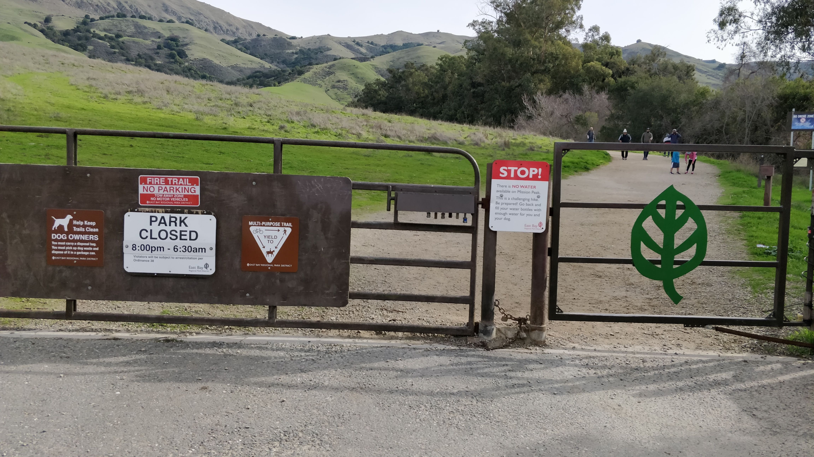

Mission Peak is one of the most popular hikes in the Bay Area if you are looking for some challenge. It is pretty crowded. We went hiking during the month of January when there were showers and there were green grass pastures for the cows to feed on.
- Where is it
- Best Time of the year to Visit: During Spring after the showers when meadows have turned green
- Best Time of the day to visit: The park opens at 6:30am itself and there will be people climbing up late into the day as well. But if you want to beat the sun, go as early as possible. 
- Parking: There are two entrances- Ohlone college and Stanford entrance. The one in Stanford entrance has around 20 car parking spaces. Better to carpool.
- Trail details:
- Trail name: Hidden Valley trail one the way up, crossing Horse heaven on the way and Peak Meadow trail while coming down
- Strenuous level: Hard
- Total round trip: 6miles
- Things to keep in mind:
- Restrooms are only at the trailhead in the parking lot.
- Carry enough water to keep yourself hydrated
- It gets windy at the top, so carry wind jacket
We started hiking at around 6:45am in the morning with the sun peeking out slowly. The sky had turned violet and it was a bit chilly. It reminds me of a soulful Kannada song as we see the mighty sun rising, all the mist slowly vanishes.
- “Munjaane manjalli…” –> “In the mist of dawnbreak…”
We started with the Hidden Valley trail and the elevation picks up pretty soon with multiple switchbacks. It is one of the tough hikes in the Bay Area for a reason.
We get a nice view of the city beneath the Mission Peak. Lots of cows grazing around but they were not bothered by the large crowd that went up and down the hill. Once you reach the top, it really feels mission accomplished to take the picture with the “Mission Peeker”. It is an iconic pole installed in 1990 with time capsules containing articles and photographs inside it, to be opened after 2090.
It was a special day for Indians that day. It was January 26th 2019, the Republic Day and a group of fellow Indians hoisted the Tricolor Indian flag at the Mission Peeker. Felt proud to see it hoisted on top of the Mission Peak, always arouses the patriotism in you, the Indian-ness in you.

After getting some rest and having an energy bar we felt re-energized to climb down the peak. This time we decided to beat the crowd by taking a different trail - Peak Meadows trail. It is on the other side of the Mission Peeker. We confirmed that there was indeed a path to take us to the Stanford entrance from the people who just came to the top. They were more exhausted from the climb than us. As we climbed down we realized that this trail was steeper than on the trail that we took while coming up. Lesser people on this trail. But if you are not in shape, I recommend not to take this trail while climbing up.
The views of the green meadows are just breathtaking. I dread coming here in Summer where the grass would have completely dried up with Sun heating up in the morning.
If you do Hidden Valley trail while climbing up and Peak Meadow trail while coming down, then it takes a total of 6miles. Climb at your own pace and don’t be demoralized by some athletes who will be running up and down multiple times while you are struggling to catch a breath while climbing up once. :) Go up the peak, enjoy the winds, the views below and more than anything you would indeed be ecstatic to be finishing the Mission.